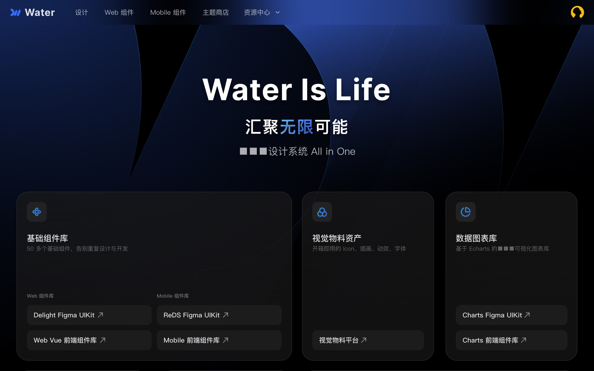
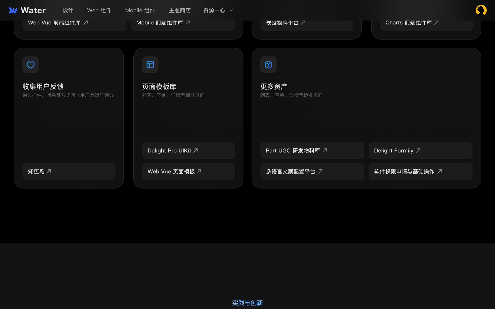
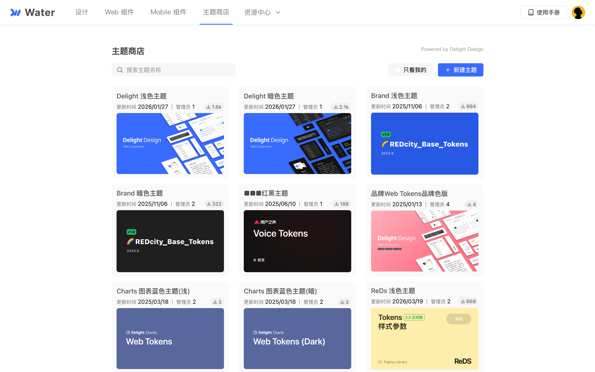
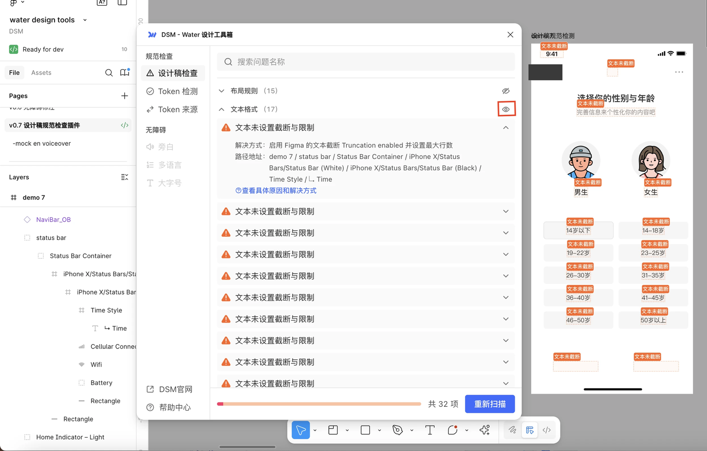
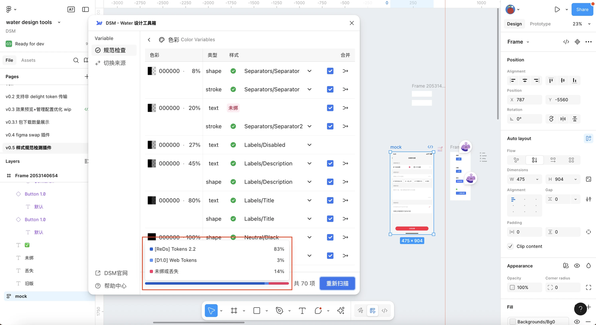
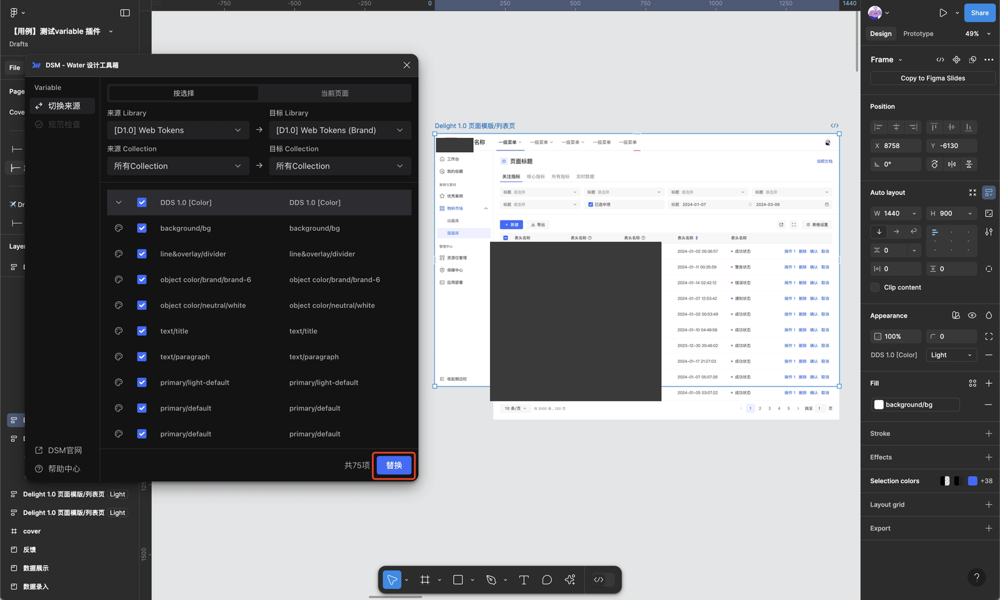
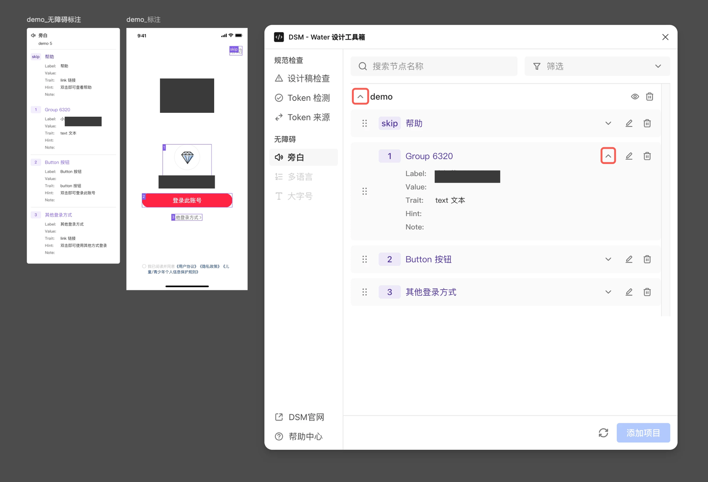
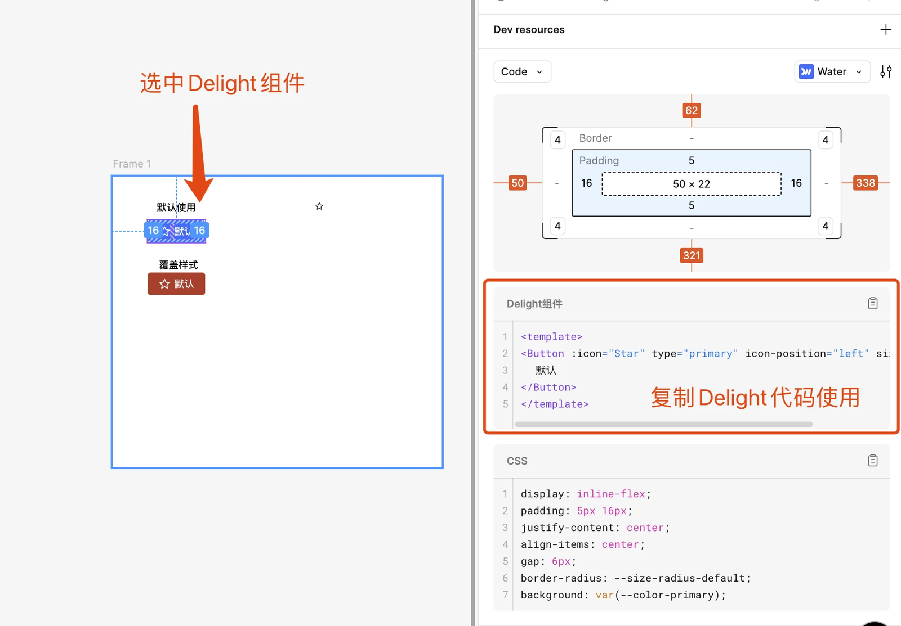

A design system, & the tools beneath.
Water — a design system, at scale.
One design language across every surface of the product — mobile, desktop, and the seven platforms in between — plus the theming pipeline and Figma-to-code tooling that keep it alive. I lead the design-engineering layer: where the system stops being a document and starts running through the build.
Before Water, the component libraries lived on scattered platforms — disconnected, unevenly adopted, and hard to actually use in production. Design principles existed, but had no reliable path onto the screen.
The work was to gather the scattered assets into one center of gravity: a system that spans B- and C-side products, that a designer can browse and an engineer can install, and that stays extensible as the business multiplies. Not a component library — an operating order for the product surface.


One system, two libraries.
Water carries a single language across two component libraries — ReDS for mobile and DDS for desktop — sharing tokens, motion, and tone underneath. A product picks its library and theme, and starts designing inside the same order everyone else works in.

Themes shipped like packages.
Theme Store is the surface I own end to end — a platform that turns a color exploration into shippable code. A designer builds a theme from Figma variables; Theme Store loads the file, previews the token list, and publishes a versioned pack. About a minute later, an engineer installs it.
npm i @xhs/water-<theme> — index.css, theme.css namespaces, or stylus vars.5 stacks




The seam, in one keystroke.
"A small magical toolbox for Figma." The plugin keeps design and code mutually legible — it checks a file against the system, heals token drift, swaps variable sources for theming, records accessibility captions, and in dev-mode turns a component instance into Delight code the engineer can paste into VSCode. It's the layer that feeds AI-assisted D2C clean, spec-conformant input.
A system with siblings.
Water doesn't stand alone. Around it sit five platforms that each speak the same vocabulary from a different corner of the product — Bridge for visual assets, Part for business components, Ocean for multi-language and copy, Ditto for page building, and Robin for NPS. The design language becomes infrastructure the whole org builds on.
What I believe about design systems.
A design system is not a component library.
It is a shared language for how the product feels. Components are the sentences; tokens, motion, tone and rhythm are the grammar. If the grammar is right, the sentences write themselves.
The best tokens are the ones designers stop noticing.
A token that fits is invisible — reached for like a keyboard shortcut, not consulted like a specification. If designers still Cmd-F for hex values, the system has more work to do.
Themes are first-class objects, not skins.
Different products, moments and audiences need different rooms — same house, different rooms. Treat a theme as versioned and shippable, packaged like an npm module, not a stack of overrides.
The Figma–code seam is where the system lives or dies.
Design that can't leave Figma is a mood board. Code that can't be redrawn in Figma is a black box. The tooling that keeps the two mutually legible is not overhead — it is the system.